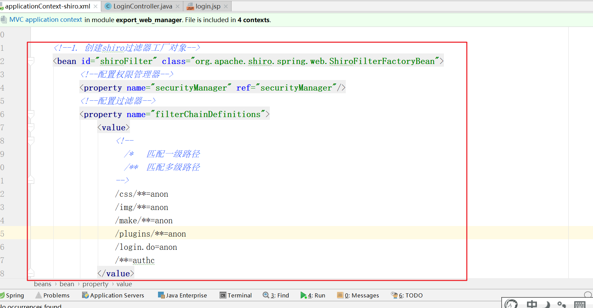
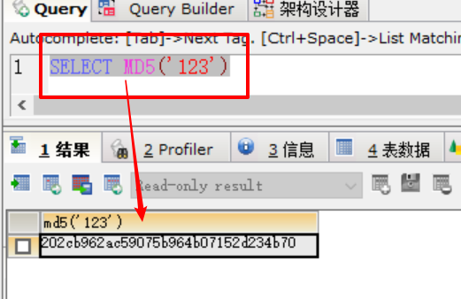
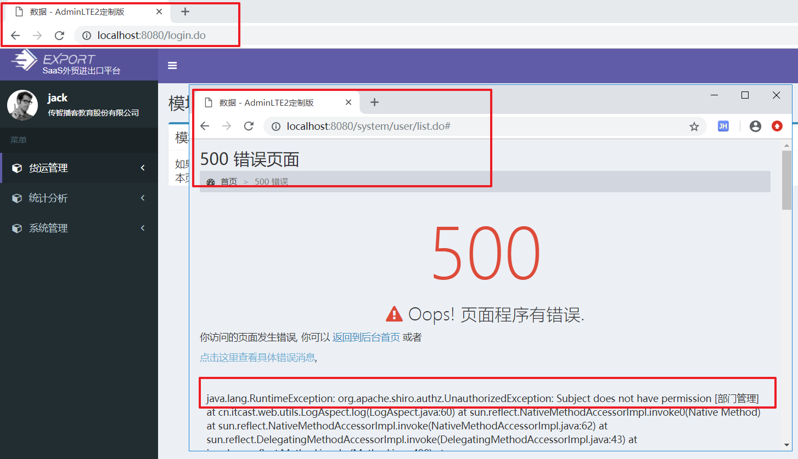

学习目标
能够了解认证和授权概念
理解Shiro安全框架的作用
能够基于shiro框架实现认证操作
能够基于shiro框架实现授权操作
完成SaaS-Export项目中的权限管理
1. Shiro的核心架构回顾
2. shiro过滤器&标签简介
过滤器
| 过滤器简称 | 对应的java类 |
|---|---|
| anon | org.apache.shiro.web.filter.authc.AnonymousFilter |
| authc | org.apache.shiro.web.filter.authc.FormAuthenticationFilter |
| authcBasic | org.apache.shiro.web.filter.authc.BasicHttpAuthenticationFilter |
| perms | org.apache.shiro.web.filter.authz.PermissionsAuthorizationFilter |
| port | org.apache.shiro.web.filter.authz.PortFilter |
| rest | org.apache.shiro.web.filter.authz.HttpMethodPermissionFilter |
| roles | org.apache.shiro.web.filter.authz.RolesAuthorizationFilter |
| ssl | org.apache.shiro.web.filter.authz.SslFilter |
| user | org.apache.shiro.web.filter.authc.UserFilter |
| logout | org.apache.shiro.web.filter.authc.LogoutFilter |
JSP标签
| 标签名称 | 标签条件（满足条件，才显示标签内容） |
|---|---|
| <shiro:authenticated > | 登录之后 |
| <shiro:notAuthenticated > | 不在登录状态时 |
| <shiro:guest > | 用户在没有RememberMe时 |
| <shiro:user > | 用户在RememberMe时 |
| <shiro:hasAnyRoles name=*”abc,123” >* | 在有abc或者123角色时 |
| <shiro:hasRole name=*”abc”>* | 拥有角色abc |
| <shiro:lacksRole name=*”abc”>* | 没有角色abc |
| <shiro:hasPermission name=*”abc”>* | 拥有权限资源abc |
| <shiro:lacksPermission name=*”abc”>* | 没有abc权限资源 |
| <shiro:principal > | 默认显示用户名称 |
总结
- 三个需要大家关注的过滤器
- anon : 不需要任何的权限的，直接放行
- authc ： 需要登陆权限才能访问- perms : 需要登陆后具备指定的权限才能访问。
- anon : 不需要任何的权限的，直接放行
3. Shiro登陆认证（一）使用认证过滤器
目标
在项目中使用认证过滤器拦截资源（该拦截的拦截，该放行的放行）
实现
在applicationContext-shiro.xml添加认证过滤器

<?xml version="1.0" encoding="UTF-8"?>
<beans xmlns="http://www.springframework.org/schema/beans"
xmlns:xsi="http://www.w3.org/2001/XMLSchema-instance"
xsi:schemaLocation="http://www.springframework.org/schema/beans
http://www.springframework.org/schema/beans/spring-beans.xsd">
<!--
注意：
1. 该文件必须在spring文件夹中，而且命名规范必须是applicationContext-shiro.xml
2，该文件的作用就是spring整合shiro-->
<!--1. 创建shiro过滤器工厂对象-->
<bean id="shiroFilter" class="org.apache.shiro.spring.web.ShiroFilterFactoryBean">
<!--配置权限管理器-->
<property name="securityManager" ref="securityManager"/>
<!--配置过滤器-->
<property name="filterChainDefinitions">
<value>
<!--
/* 匹配一级路径
/** 匹配多级路径
-->
/css/**=anon
/img/**=anon
/make/**=anon
/plugins/**=anon
/login.do=anon
/**=authc
</value>
</property>
<!--配置shiro的登陆页面,shiro默认的登陆页面就是login.jsp-->
<property name="loginUrl" value="/login.jsp"/>
</bean>
<!--2. 创建SecurityManager对象-->
<bean id="securityManager" class="org.apache.shiro.web.mgt.DefaultWebSecurityManager">
<property name="realm" ref="realm"/>
</bean>
<!--3. 创建Realm-->
<bean id="realm" class="cn.itcast.web.shiro.AuthRealm"/>
</beans>其中，
anon代表不认证也可以访问（匿名访问），通常对静态资源进行放行
authc代表必须通过认证才可以访问，通常对动态资源（controller，jsp页面）进行拦截，如果用户没有认证，Shiro会自动跳转到login.jsp页面
注意事项：
/login.do因为登录请求，必须也使用anon放行！！！否则无法登录啦！
注意：加上认证过滤器以后，发现访问任何资源都自动跳转到login.jsp页面，因为shiro默认的登录页面就是login.jsp
4. Shiro登陆认证（二）完成登录认证
目标
实现登陆认证。
步骤
- 修改LoginController，通过shiro实现登陆认证
- 编写AuthRealm，实现登陆认证
- 测试
实现
修改LoginController，通过shiro实现登陆认证
package cn.itcast.web.controller; import cn.itcast.domain.system.Module; import cn.itcast.domain.system.User; import cn.itcast.service.system.ModuleService; import cn.itcast.service.system.UserService; import org.apache.shiro.SecurityUtils; import org.apache.shiro.authc.*; import org.apache.shiro.subject.Subject; import org.springframework.beans.factory.annotation.Autowired; import org.springframework.stereotype.Controller; import org.springframework.util.StringUtils; import org.springframework.web.bind.annotation.RequestMapping; import java.util.List; @Controller public class LoginController extends BaseController { @Autowired private UserService userService; @Autowired private ModuleService moduleService; @RequestMapping("/login") public String login(String email,String password) { //1. 检查邮箱与密码是否为空，如果为空直接回到login.jsp if (StringUtils.isEmpty(email) || StringUtils.isEmpty(password)) { request.setAttribute("error", "用户名或者密码不能为空"); //注意： login.jsp页面并不在pages目录中，所以不需要经过视图解析器。 return "forward:/login.jsp"; } try { //2. 得到subject对象。 Subject subject = SecurityUtils.getSubject(); //3. 把邮箱与密码封装到Token对象 UsernamePasswordToken token = new UsernamePasswordToken(email,password); //4.使用subject发出登陆的请求，并且把token传入，传递给realm subject.login(token); //5.如果登陆成功，你可以获取到一个登陆成功一个对象, shiro登陆成功之后，shiro本身就会往session中做很多登陆成功标记。 User loginUser = (User) subject.getPrincipal(); //6. 自己做一些登陆成功标记，并且可以加载模块 session.setAttribute("loginUser",loginUser); //查询该用户对应的模块 List<Module> moduleList = moduleService.findModuleByUser(loginUser); //把查询出来的菜单存储到域中,由于该菜单应该是该用户还没有退出的情况下都可以使用，那么建议使用session域 session.setAttribute("modules",moduleList); //回到后台主页 return "home/main"; } catch (UnknownAccountException e) { //如果一旦出现该异常，代码用户名不存在 request.setAttribute("error","用户名不存在"); return "forward:/login.jsp"; }catch (IncorrectCredentialsException e){ //如果一旦出现该异常，密码错误 request.setAttribute("error","密码不不正确"); return "forward:/login.jsp"; } } }编写AuthRealm，实现登陆认证
package cn.itcast.web.shiro; import cn.itcast.domain.system.User; import cn.itcast.service.system.UserService; import org.apache.shiro.authc.*; import org.apache.shiro.authz.AuthorizationInfo; import org.apache.shiro.realm.AuthorizingRealm; import org.apache.shiro.subject.PrincipalCollection; import org.springframework.beans.factory.annotation.Autowired; public class AuthRealm extends AuthorizingRealm { @Autowired private UserService userService; /* 登陆认证 */ @Override protected AuthenticationInfo doGetAuthenticationInfo(AuthenticationToken token) throws AuthenticationException { //1. 先把token强制转换为UsernamePasswordToken UsernamePasswordToken usernamePasswordToken = (UsernamePasswordToken) token; //2. 得到用户输入的邮箱（账号）与密码 String email = usernamePasswordToken.getUsername(); // String password = new String(usernamePasswordToken.getPassword()); 我们是可以通过token得到密码的，只不过我们目前不需要使用到而已。 //3. 根据邮箱查询查询用户 User dbUser = userService.findByEmail(email); //4 如果根据邮箱查找到用户为null，我们直接return null即可，如果我们return null，那么controller将会收到UnknownAccountException异常 if(dbUser==null){ return null; } //5. 创建SimpleAuthenticationInfo对象，把登陆成功的对象还有该用户在数据库的密码封装到里面即可，shiro会自行对比密码的。 /* SimpleAuthenticationInfo(Object principal, Object credentials, String realmName) principal: 登陆成功后返回给Controller的对象。 credentials： 该用户在数据库中的密码 realmName: 当前realm的名字，不需要 */ SimpleAuthenticationInfo simpleAuthenticationInfo = new SimpleAuthenticationInfo(dbUser,dbUser.getPassword(),""); return simpleAuthenticationInfo; } /* 授权 */ @Override protected AuthorizationInfo doGetAuthorizationInfo(PrincipalCollection principals) { return null; } }测试
5. Shiro登陆认证（三）凭证匹配器-普通加密
需求
目前对用户输入的密码，我们直接输入原文密码。这样不安全，现在我们需要对用户输入的密码md5加密 及 md5加盐加密。
==加密方式：==
1）普通加密（md5）
2）加盐加密（推荐使用）
普通加密实现
步骤d
1）对数据库密码进行md5加密
2）在applicationContext-shiro.xml，添加加密认证配置
3）测试
实现
1）对数据库密码进行md5加密
使用mysql的md5函数对密码进行加密，然后直接修改数据库的用户密码

2）在applicationContext-shiro.xml，添加加密认证配置
<?xml version="1.0" encoding="UTF-8"?>
<beans xmlns="http://www.springframework.org/schema/beans"
xmlns:xsi="http://www.w3.org/2001/XMLSchema-instance"
xsi:schemaLocation="http://www.springframework.org/schema/beans
http://www.springframework.org/schema/beans/spring-beans.xsd">
<!--
注意：
1. 该文件必须在spring文件夹中，而且命名规范必须是applicationContext-shiro.xml
2，该文件的作用就是spring整合shiro-->
<!--1. 创建shiro过滤器工厂对象-->
<bean id="shiroFilter" class="org.apache.shiro.spring.web.ShiroFilterFactoryBean">
<!--配置权限管理器-->
<property name="securityManager" ref="securityManager"/>
<!--配置过滤器-->
<property name="filterChainDefinitions">
<value>
<!--
/* 匹配一级路径
/** 匹配多级路径
-->
/css/**=anon
/img/**=anon
/make/**=anon
/plugins/**=anon
/login.do=anon
/**=authc
</value>
</property>
<!--配置shiro的登陆页面,shiro默认的登陆页面就是login.jsp-->
<property name="loginUrl" value="/login.jsp"/>
</bean>
<!--2. 创建SecurityManager对象-->
<bean id="securityManager" class="org.apache.shiro.web.mgt.DefaultWebSecurityManager">
<property name="realm" ref="realm"/>
</bean>
<!--3. 创建Realm-->
<bean id="realm" class="cn.itcast.web.shiro.AuthRealm">
<!--引用密码匹配器-->
<property name="credentialsMatcher" ref="credentialsMatcher"/>
</bean>
<!--4.创建一个密码匹配器-->
<bean id="credentialsMatcher" class="org.apache.shiro.authc.credential.HashedCredentialsMatcher">
<property name="hashAlgorithmName" value="md5"/>
</bean>
</beans>6. Shiro登陆认证（四）凭证匹配器-加盐加密
如果只是单纯使用md5或sha1进行加密，容易被人利用”彩虹表”撞库来破解密码，导致密码不安全！这时可以进行加盐加密来解决。
“彩虹表” 存储了好几亿、几十亿数据
明文 密文
1 xxxx
2 xxxxx
123 xxx
123456 xxxx
select 明文 from xx where 密文= ‘202cb962ac59075b964b07152d234b70’；
密码加盐： 加盐为什么会增加了破解的难度了呢？ password+随机字符串(盐(id或者邮箱))
加盐的难破解的原因：
- 盐是随机的。
- 加盐的算法结合SHA1（哈希算法）算法与md5算法。
举例：
邮箱：lw@export.com （盐）
密码： 123
- 使用lw@export.com 进行哈希算法， 128位的字符串.
- 使用123进行哈希算法，128位的字符串
- 128位的字符串.+128位的字符串=256位字符串 再使用md5算法
步骤
1）编写代码对密码加盐加密
2）编写自定义密码匹配器
3）在applicationContext-shiro.xml，添加自定义凭证匹配器
4）测试
加盐加密实现
1）编写代码对密码加盐加密
package cn.itcast.web.shiro;
import org.apache.shiro.crypto.hash.Md5Hash;
public class MD5Demo {
public static void main(String[] args) {
String salt = "lw@export.com";
String password = "123";
//如果你需要进行加盐加密，可以使用shiro提供的Md5Hash类进行加盐加密
Md5Hash md5Hash = new Md5Hash(password,salt);
System.out.println("加盐加密后的密码："+ md5Hash);
}
}
把生成的密码，替换数据库的密码
2）编写自定义凭证(md5加盐加密匹配器
package cn.itcast.web.shiro;
import org.apache.shiro.authc.AuthenticationInfo;
import org.apache.shiro.authc.AuthenticationToken;
import org.apache.shiro.authc.UsernamePasswordToken;
import org.apache.shiro.authc.credential.SimpleCredentialsMatcher;
import org.apache.shiro.crypto.hash.Md5Hash;
/*
自定义密码匹配器需要继承SimpleCredentialsMatcher
*/
public class CustomCredentialsMatcher extends SimpleCredentialsMatcher {
/*
doCredentialsMatch(AuthenticationToken token, AuthenticationInfo info)
token：用户输入的邮箱与密码
AuthenticationInfo ： 这个对象就是在realm最后返回值，该对象包含了该用户在数据库中的密码
*/
@Override
public boolean doCredentialsMatch(AuthenticationToken token, AuthenticationInfo info) {
//1. 先token强制转换为userNamePasswordToken
UsernamePasswordToken usernamePasswordToken = (UsernamePasswordToken) token;
//2.得到用户输入的邮箱与密码
String salt = usernamePasswordToken.getUsername();
String password = new String(usernamePasswordToken.getPassword());
//3. 对用户输入的邮箱与密码加盐加密得到一个密文。
Md5Hash md5Hash = new Md5Hash(password,salt);
String slatPassword = md5Hash.toString(); //用户输入的密码的密文
//4. 取出该用户在数据库中密码，进行对比。
String dbPassword = (String) info.getCredentials();
return slatPassword.equals(dbPassword);
}
}
3）在applicationContext-shiro.xml，添加自定义凭证匹配器
<?xml version="1.0" encoding="UTF-8"?>
<beans xmlns="http://www.springframework.org/schema/beans"
xmlns:xsi="http://www.w3.org/2001/XMLSchema-instance"
xsi:schemaLocation="http://www.springframework.org/schema/beans
http://www.springframework.org/schema/beans/spring-beans.xsd">
<!--
注意：
1. 该文件必须在spring文件夹中，而且命名规范必须是applicationContext-shiro.xml
2，该文件的作用就是spring整合shiro-->
<!--1. 创建shiro过滤器工厂对象-->
<bean id="shiroFilter" class="org.apache.shiro.spring.web.ShiroFilterFactoryBean">
<!--配置权限管理器-->
<property name="securityManager" ref="securityManager"/>
<!--配置过滤器-->
<property name="filterChainDefinitions">
<value>
<!--
/* 匹配一级路径
/** 匹配多级路径
-->
/css/**=anon
/img/**=anon
/make/**=anon
/plugins/**=anon
/login.do=anon
/**=authc
</value>
</property>
<!--配置shiro的登陆页面,shiro默认的登陆页面就是login.jsp-->
<property name="loginUrl" value="/login.jsp"/>
</bean>
<!--2. 创建SecurityManager对象-->
<bean id="securityManager" class="org.apache.shiro.web.mgt.DefaultWebSecurityManager">
<property name="realm" ref="realm"/>
</bean>
<!--3. 创建Realm-->
<bean id="realm" class="cn.itcast.web.shiro.AuthRealm">
<!--引用密码匹配器-->
<property name="credentialsMatcher" ref="credentialsMatcher"/>
</bean>
<!--4.创建一个普通md5密码匹配器-->
<!-- <bean id="credentialsMatcher" class="org.apache.shiro.authc.credential.HashedCredentialsMatcher">
<property name="hashAlgorithmName" value="md5"/>
</bean>-->
<!--4. 创建自定义密码密码匹配器-->
<bean id="credentialsMatcher" class="cn.itcast.web.shiro.CustomCredentialsMatcher"/>
</beans>4）测试
登陆: OK
添加用户完成加盐加密
==注意：添加用户时候，需要对用户输入的密码加密、加盐，这样就可以使用添加的用户登陆了。==
UserServiceImpl添加加密逻辑
package cn.itcast.service.system.impl;
import cn.itcast.dao.system.UserDao;
import cn.itcast.domain.system.User;
import cn.itcast.service.system.UserService;
import com.github.pagehelper.PageHelper;
import com.github.pagehelper.PageInfo;
import org.apache.shiro.crypto.hash.Md5Hash;
import org.springframework.beans.factory.annotation.Autowired;
import org.springframework.stereotype.Service;
import java.util.List;
import java.util.UUID;
@Service
public class UserServiceImpl implements UserService {
@Autowired
private UserDao userDao;
//添加用户
@Override
public void save(User user) {
//设置一个uuid作为主键
user.setId(UUID.randomUUID().toString());
//得到Shiro加盐加密工具类
Md5Hash md5Hash = new Md5Hash(user.getPassword(),user.getEmail());
String saltPassword = md5Hash.toString();
user.setPassword(saltPassword);
//保存
userDao.save(user);
}
}
7. 关于退出的问题
修改了LoginController的logOut的方法，使用shiro的api去退出登陆、

package cn.itcast.web.controller;
import cn.itcast.domain.system.Module;
import cn.itcast.domain.system.User;
import cn.itcast.service.system.ModuleService;
import cn.itcast.service.system.UserService;
import org.apache.shiro.SecurityUtils;
import org.apache.shiro.authc.AuthenticationException;
import org.apache.shiro.authc.IncorrectCredentialsException;
import org.apache.shiro.authc.UnknownAccountException;
import org.apache.shiro.authc.UsernamePasswordToken;
import org.apache.shiro.subject.Subject;
import org.springframework.beans.factory.annotation.Autowired;
import org.springframework.stereotype.Controller;
import org.springframework.util.StringUtils;
import org.springframework.web.bind.annotation.RequestMapping;
import java.util.List;
@Controller
public class LoginController extends BaseController{
@Autowired
private UserService userService;
@Autowired
private ModuleService moduleService;
/*
作用：用户注销
url:/logout.do
参数：
返回值：login.jsp页面
注销的方案有两种：
1. 删除session中登录成功标记 session.removeAttribute("登录成功标记")
2. 销毁session
*/
@RequestMapping("/logout")
public String logout(){
//1. 得到subject对象
Subject subject = SecurityUtils.getSubject();
//2. 使用subject对象销毁shiro登录成功后在session的登陆成功标记
subject.logout();
//直接销毁session
session.invalidate();
//request没有携带任何的数据，所以我使用请求重定向
return "redirect:/login.jsp";
}
}
现在注释掉session.invalidate()这一行代码，再次测试。
测试
第一步：点击退出
第二步：回到登陆页面
8. shiro授权(一)介绍
目标
- 什么是授权，如何实现授权？
- shiro授权校验有几种方式
什么是授权，如何实现授权？
授权，也叫做授权访问校验
登陆认证后，系统校验用户是否有权限访问资源，就叫授权。**(登陆之后我们授予登陆用户某些资源的访问权限)**
==如何实现授权？分为以下两个步骤==
- 登陆认证成功后，获取用户的权限 （给该用户分配对应的权限）
- 访问资源时候，进行授权校验：用访问资源需要的权限去用户权限列表查找，如果存在，则有权限访问资源。（权限拦截）
shiro授权校验有几种方式
shiro提供了四种方式实现权限校验：
1） 硬编码方式（拦截方法）（非Web应用，Web应用）
Subject subject = SecurityUtils.getSubject();
subject.checkPermission("部门管理");2） 过滤器配置方式（拦截url）（Web应用）
/system/user/list.do = perms["用户管理"]3） 注解方式（拦截方法）（Web应用）
@RequiresPermissions(“”)4） shiro提供的标签（（拦截页面元素：按钮，表格等））（Web应用）
<shiro:hasPermission name="用户管理">
<a href="#">用户管理</a>
</shiro:hasPermission>9. shiro授权(二)完成用户授权方法
目标
实现自定义realm的doGetAuthorizationInfo()方法，返回用户已经具有的权限。
实现
package cn.itcast.web.shiro;
import cn.itcast.domain.system.Module;
import cn.itcast.domain.system.User;
import cn.itcast.service.system.ModuleService;
import cn.itcast.service.system.UserService;
import org.apache.shiro.authc.*;
import org.apache.shiro.authz.AuthorizationInfo;
import org.apache.shiro.authz.SimpleAuthorizationInfo;
import org.apache.shiro.realm.AuthorizingRealm;
import org.apache.shiro.subject.PrincipalCollection;
import org.springframework.beans.factory.annotation.Autowired;
import java.util.List;
public class AuthRealm extends AuthorizingRealm {
@Autowired
private UserService userService;
@Autowired
private ModuleService moduleService;
/*
登陆认证
*/
@Override
protected AuthenticationInfo doGetAuthenticationInfo(AuthenticationToken token) throws AuthenticationException {
//1. 先把token强制转换为UsernamePasswordToken
UsernamePasswordToken usernamePasswordToken = (UsernamePasswordToken) token;
//2. 得到用户输入的邮箱（账号）与密码
String email = usernamePasswordToken.getUsername();
// String password = new String(usernamePasswordToken.getPassword()); 我们是可以通过token得到密码的，只不过我们目前不需要使用到而已。
//3. 根据邮箱查询查询用户
User dbUser = userService.findByEmail(email);
//4 如果根据邮箱查找到用户为null，我们直接return null即可，如果我们return null，那么controller将会收到UnknownAccountException异常
if(dbUser==null){
return null;
}
//5. 创建SimpleAuthenticationInfo对象，把登陆成功的对象还有该用户在数据库的密码封装到里面即可，shiro会自行对比密码的。
/*
SimpleAuthenticationInfo(Object principal, Object credentials, String realmName)
principal: 登陆成功后返回给Controller的对象。
credentials： 该用户在数据库中的密码
realmName: 当前realm的名字，不需要
*/
SimpleAuthenticationInfo simpleAuthenticationInfo = new SimpleAuthenticationInfo(dbUser,dbUser.getPassword(),"");
return simpleAuthenticationInfo;
}
/*
授权: 给登录成功的用户授予权限
*/
@Override
protected AuthorizationInfo doGetAuthorizationInfo(PrincipalCollection principals) {
//1. 得到登陆成功的用户
User loginUser= (User) principals.getPrimaryPrincipal();
//2. 根据登陆成功用户查询该用户对应的权限
List<Module> moduleList = moduleService.findModuleByUser(loginUser);
//3. 遍历权限，把权限的标记添加到当前AuthorizationInfo对象
SimpleAuthorizationInfo simpleAuthorizationInfo = new SimpleAuthorizationInfo();
for (Module module : moduleList) {
//权限的标记一定要唯一： id或者权限的名称都具备唯一性,id因为没有意义的，所以非常难记忆，所以权限的名称
simpleAuthorizationInfo.addStringPermission(module.getName());
}
return simpleAuthorizationInfo;
}
}
10. shiro授权(三)硬编码方式实现权限管理
问题
第一步：访问系统，目前系统管理中只有“日志管理”
第二步：虽然看不到用户管理，但直接输入地址，也可以访问
第三步： 思考
这种情况如何解决？ 只有一种办法： 后台做权限校验，当用户有权限才可以访问否则，不能访问.
权限控制
只需要在控制器中添加如下2行代码即可：
在企业管理的Controller添加了权限检查的代码

package cn.itcast.web.controller.company; import cn.itcast.domain.company.Company; import cn.itcast.service.company.CompanyService; import cn.itcast.web.controller.BaseController; import com.github.pagehelper.PageInfo; import org.apache.shiro.SecurityUtils; import org.apache.shiro.subject.Subject; import org.springframework.beans.factory.annotation.Autowired; import org.springframework.stereotype.Controller; import org.springframework.ui.Model; import org.springframework.util.StringUtils; import org.springframework.web.bind.annotation.RequestMapping; import org.springframework.web.bind.annotation.RequestParam; import javax.servlet.http.HttpServlet; import javax.servlet.http.HttpServletRequest; import javax.servlet.http.HttpServletResponse; import java.util.Date; import java.util.List; @Controller @RequestMapping("/company") public class CompanyController extends BaseController { @Autowired private CompanyService companyService; @RequestMapping("/list") public String list(@RequestParam(defaultValue = "1") int pageNum,@RequestParam(defaultValue = "5") int pageSize){ Subject subject = SecurityUtils.getSubject(); //发出了企业管理的权限检查请求 subject.checkPermission("企业管理"); //List<Company> list = companyService.findAll(); PageInfo<Company> pageInfo = companyService.findByPage(pageNum,pageSize); //把企业存储到域中 request.setAttribute("pageInfo",pageInfo); return "company/company-list"; // 完整路径： /pages/company/company-list.jsp } }
- 在用户管理添加了权限检查的代码
/*
方法的作用：展示用户列表
url: /system/user/list.do
参数： 当前页， 页面大小
返回： system/user/user-list
*/
@RequestMapping("list")
public String list(@RequestParam(defaultValue = "1") int pageNum, @RequestParam(defaultValue = "5") int pageSize){
//添加权限检查的代码之后，则要求访问者必须拥有权限才能访问,使用硬编码的方式去检查权限
Subject subject = SecurityUtils.getSubject();
subject.checkPermission("用户管理");
//1. 查询到pageInfo对象
//companyId是指当前登陆者所属的公司id.
String companyId =getLoginCompanyId(); //由于现在还有完成登陆功能，所以目前的数据只是写死。
PageInfo<User> pageInfo = userService.findByPage(pageNum, pageSize, companyId);
//2. 把PageInfo存储到域中
request.setAttribute("pageInfo",pageInfo);
//3. 返回到列表页面
return "system/user/user-list"; ///WEB-INF/pages/
}
测试
先登陆，再打开另外一个浏览器手动再地址栏输入：http://localhost:8080/system/user/list.do，访问用户列表。

后台结果: 报错，没有权限访问。
11. shiro授权(四)XML配置方式实现权限管理（推荐）
需求
通过XML配饰方式实现需求： 有用户管理的权限，才可以访问； 否则拒绝访问。
先注释之前的代码方式实现权限校验部分：
shiro过滤器
先查看shiro提供的过滤器：
过滤器
| 过滤器简称 | 对应的java类 |
|---|---|
| anon | org.apache.shiro.web.filter.authc.AnonymousFilter |
| authc | org.apache.shiro.web.filter.authc.FormAuthenticationFilter |
| authcBasic | org.apache.shiro.web.filter.authc.BasicHttpAuthenticationFilter |
| perms | org.apache.shiro.web.filter.authz.PermissionsAuthorizationFilter |
| port | org.apache.shiro.web.filter.authz.PortFilter |
| rest | org.apache.shiro.web.filter.authz.HttpMethodPermissionFilter |
| roles | org.apache.shiro.web.filter.authz.RolesAuthorizationFilter |
| ssl | org.apache.shiro.web.filter.authz.SslFilter |
| user | org.apache.shiro.web.filter.authc.UserFilter |
| logout | org.apache.shiro.web.filter.authc.LogoutFilter |
perms 过滤器，就是进行权限校验的过滤器
权限控制
<?xml version="1.0" encoding="UTF-8"?>
<beans xmlns="http://www.springframework.org/schema/beans"
xmlns:xsi="http://www.w3.org/2001/XMLSchema-instance"
xsi:schemaLocation="http://www.springframework.org/schema/beans
http://www.springframework.org/schema/beans/spring-beans.xsd">
<!--
注意：
1. 该文件必须在spring文件夹中，而且命名规范必须是applicationContext-shiro.xml
2，该文件的作用就是spring整合shiro-->
<!--1. 创建shiro过滤器工厂对象-->
<bean id="shiroFilter" class="org.apache.shiro.spring.web.ShiroFilterFactoryBean">
<!--配置权限管理器-->
<property name="securityManager" ref="securityManager"/>
<!--配置过滤器-->
<property name="filterChainDefinitions">
<value>
<!--
/* 匹配一级路径
/** 匹配多级路径
-->
/css/**=anon
/img/**=anon
/make/**=anon
/plugins/**=anon
/login.do=anon
/system/user/list.do=perms["用户管理"]
/company/list.do=perms["企业管理"]
/**=authc
</value>
</property>
<!--配置shiro的登陆页面,shiro默认的登陆页面就是login.jsp-->
<property name="loginUrl" value="/login.jsp"/>
<!--xml配置权限检查最有优势的地方：配置缺失权限的页面-->
<property name="unauthorizedUrl" value="/unauthorized.jsp"/>
</bean>
<!--2. 创建SecurityManager对象-->
<bean id="securityManager" class="org.apache.shiro.web.mgt.DefaultWebSecurityManager">
<property name="realm" ref="realm"/>
</bean>
<!--3. 创建Realm-->
<bean id="realm" class="cn.itcast.web.shiro.AuthRealm">
<!--引用密码匹配器-->
<property name="credentialsMatcher" ref="credentialsMatcher"/>
</bean>
<!--4.创建一个普通md5密码匹配器-->
<!-- <bean id="credentialsMatcher" class="org.apache.shiro.authc.credential.HashedCredentialsMatcher">
<property name="hashAlgorithmName" value="md5"/>
</bean>-->
<!--4. 创建自定义密码密码匹配器-->
<bean id="credentialsMatcher" class="cn.itcast.web.shiro.CustomCredentialsMatcher"/>
</beans>测试
先登陆，再打开另外一个浏览器手动再地址栏输入：http://localhost:8080/system/user/list.do，访问用户列表。发现重定向到unauthorized.jsp：
原因：因为在spring整合shiro时候，配置了未授权访问对应的错误页面。
12. shiro授权(五)注解方式实现
需求
通过注解配置方式实现需求： 有用户管理的权限，才可以访问； 否则拒绝访问。
先注释掉xml配置部分
权限控制
现在通过注解实现权限控制，分为2步骤：
- 在applicationContext-shiro.xml中开启shiro注解支持
- 开启Aop注解支持（已经完成）
- 在controller中使用@RequiresPermissions(“”)注解
实现：
在applicationContext-shiro.xml中==开启shiro注解支持==
添加如下配置：
<bean id="lifecycleBeanPostProcessor" class="org.apache.shiro.spring.LifecycleBeanPostProcessor"/> <bean class="org.springframework.aop.framework.autoproxy.DefaultAdvisorAutoProxyCreator" depends-on="lifecycleBeanPostProcessor"/> <bean class="org.apache.shiro.spring.security.interceptor.AuthorizationAttributeSourceAdvisor"> <property name="securityManager" ref="securityManager"/> </bean>在springmvc.xml开启Aop自动代理（已经完成）
<!--6. 开启Aop自动代理--> <aop:aspectj-autoproxy/>在controller中使用@RequiresPermissions(“”)注解
测试
13. shiro授权(六)Shiro标签实现权限管理
查询用户的权限
登陆用户lw@export.com, 具有的权限有： 用户管理、部门管理、角色管理、装箱管理等。、
编写shiro-test.jsp
创建页面，登陆后再访问，如下：
现在在shiro-test.jsp中，通过shiro标签实现权限控制
<%@ taglib prefix="shiro" uri="http://shiro.apache.org/tags" %> <%@ page contentType="text/html;charset=UTF-8" language="java" %> <html> <head> <title>Title</title> </head> <body> <%-- 登陆的用户只有具备用户管理的权限才可以看到用户管理的按钮--%> <shiro:hasPermission name="用户管理"> <a href="#">用户管理</a><br/> </shiro:hasPermission> <%-- 登陆的用户只有具备企业管理的权限才可以看到企业管理的按钮--%> <shiro:hasPermission name="企业管理"> <a href="#">企业管理</a> </shiro:hasPermission> </body> </html>
14.shiro缓存
介绍
缓存可以提高查询数据性能， 对同一批数据进行多次查询时， 第一次查询走数据库，查询数据后，将数据保存在内存中，第二次以后查询 可以直接从内存获取数据，而不需要和数据库进行交互。
Shiro缓存使用Redis、EhCache、自带的MpCache实现的三种方式实现，这里使用的是EhCache缓存插件
添加依赖
在父工程导入shiro-ehcache的依赖
<dependency>
<groupId>org.apache.shiro</groupId>
<artifactId>shiro-ehcache</artifactId>
<version>1.3.2</version>
</dependency>缓存配置
在resources目录添加ehcache配置
<?xml version="1.0" encoding="UTF-8"?>
<ehcache updateCheck="false" dynamicConfig="false">
<diskStore path="java.io.tmpdir"/>
<!--
name:缓存名称。
maxElementsInMemory：缓存最大个数。
eternal:对象是否永久有效，一但设置了，timeout将不起作用。
timeToIdleSeconds：设置对象在失效前的允许闲置时间（单位：秒）。仅当eternal=false对象不是永久有效时使用，可选属性，默认值是0，也就是可闲置时间无穷大。
timeToLiveSeconds：设置对象在失效前允许存活时间（单位：秒）。最大时间介于创建时间和失效时间之间。仅当eternal=false对象不是永久有效时使用，默认是0.，也就是对象存活时间无穷大。
overflowToDisk：当内存中对象数量达到maxElementsInMemory时，Ehcache将会对象写到磁盘中。
diskSpoolBufferSizeMB：这个参数设置DiskStore（磁盘缓存）的缓存区大小。默认是30MB。每个Cache都应该有自己的一个缓冲区。
maxElementsOnDisk：硬盘最大缓存个数。
diskPersistent：是否缓存虚拟机重启期数据 Whether the disk store persists between restarts of the Virtual Machine. The default value is false.
diskExpiryThreadIntervalSeconds：磁盘失效线程运行时间间隔，默认是120秒。
memoryStoreEvictionPolicy：当达到maxElementsInMemory限制时，Ehcache将会根据指定的策略去清理内存。默认策略是LRU（最近最少使用）。你可以设置为FIFO（先进先出）或是LFU（较少使用）。
clearOnFlush：内存数量最大时是否清除。
-->
<defaultCache
maxElementsInMemory="10000"
eternal="false"
timeToIdleSeconds="120"
timeToLiveSeconds="120"
overflowToDisk="true"
maxElementsOnDisk="10000000"
diskPersistent="false"
diskExpiryThreadIntervalSeconds="120"
memoryStoreEvictionPolicy="LRU"
/>
</ehcache>Spring整合EhCache
在applicationContext-shiro.xml添加缓存配置
<!--缓存管理器-->
<bean id="cacheManager" class="org.apache.shiro.cache.ehcache.EhCacheManager">
<property name="cacheManagerConfigFile" value="classpath:ehcache/ehcache.xml"/>
</bean>
<!--安全管理器-->
<bean id="securityManager" class="org.apache.shiro.web.mgt.DefaultWebSecurityManager">
<!--关联Realm-->
<property name="realm" ref="authRealm"/>
<property name="cacheManager" ref="cacheManager"/>
</bean>对象序列化
注意：User类需要实现Serializable接口，否则无法缓存（持久化到硬盘）